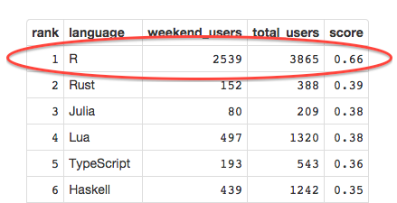

What's an interesting language to study?
Perhaps:
- One which people are using on GitHub.
- One which people are playing with in their spare time (on the weekend).
- One with a decently active community -- not too fringe.
Some Data Monkey
Perhaps:
data <- read.table('../counts.txt', sep=',', comment.char='', header=TRUE)
head(data[data$week == 1 & data$total_users >= 200,])
## week language weekend_users total_users
## 20 1 VimL 964 3756
## 25 1 Ruby 5175 18176
## 76 1 Groovy 218 784
## 82 1 Perl 583 2210
## 129 1 Rust 125 311
## 148 1 Common Lisp 63 200
slice <- data[data$week == 1 & data$total_users >= 200,]
slice$score <- slice$weekend_users / slice$total_users
head(slice[order(-slice$score),])
## week language weekend_users total_users score
## 129 1 Rust 125 311 0.4019
## 649 1 Processing 135 362 0.3729
## 383 1 Lua 480 1307 0.3673
## 500 1 Haskell 425 1234 0.3444
## 434 1 Scheme 75 223 0.3363
## 372 1 TypeScript 200 598 0.3344
And look, R is #1 in 2 of the 4 weeks of June.

So creating data presentations in R might be a totally normal thing to do on the weekend. Yes!